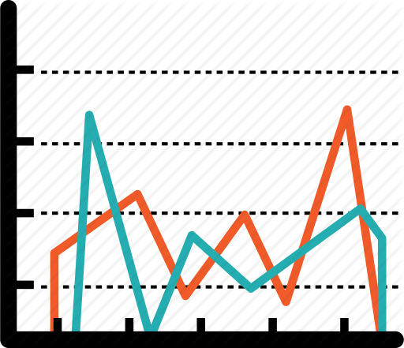
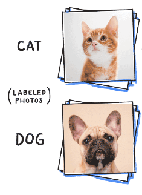
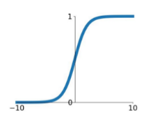
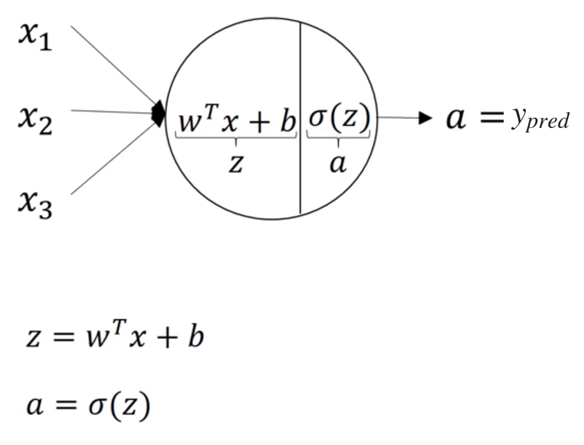
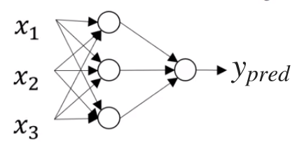
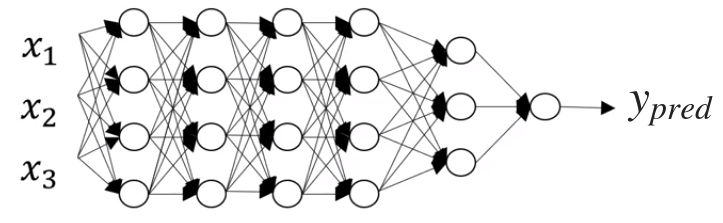

A not so deep introduction to deep learning
ECI 2019
by Agus Montero
Introduction
About me
Data Scientist at Almundo
Optimization & Machine Learning 
About our team
Big Data & Machine Learning at Almundo
Personalization Team


Focus on
Deep Neural Networks
Motivation and ideas
Challenge: create an algorithm to distinguish dogs from cats
Data: images of dogs and cats (let's call it $X$) 
Simple model: $y_{pred} = g(w^T x + b)$ where $g$ is the sigmoid function 
$w$, $b$?
Learning $w$ and $b$:
$X \rightarrow X_{train}, X_{test}$
Define loss function $\mathcal{L}(y_{pred}, y_{true})$
(I want $y_{pred}\approx y_{true}$)
Option 1: $\quad (y_{pred} - y_{true})^2$
Option 2: $\quad -y_{true} \log(y_{pred}) + (1-y_{true}) \log(1 - y_{pred}) $
Cost function:
$J(w,b) = \frac{1}{m} \sum_{i=1}^m \mathcal{L}(y_{pred}^{(i)}, y_{true}^{(i)})$
Optimization problem: minimize $J(w,b)$
Option: Grandient descent
# initialize
w = np.zeros(shape=(X.shape[0], 1))
b = 0
costs = []
# optimize
for i in range(num_iterations):
# propagate
Y_pred = sigmoid(np.dot(w.T, X) + b)
cost = (-1 / m) * np.sum(
Y_train * np.log(Y_pred)+ (1-Y_train) * (np.log(1 - Y_pred)))
costs.append(cost)
# derivatives
dw = (1 / m) * np.dot(X, (Y_pred - Y_train).T) # dL/dw
db = (1 / m) * np.sum(Y_pred - Y_pred) # dL/db
# update
w = w - learning_rate * dw
b = b - learning_rate * db



Practical aspects of Deep Learning
At least some of them
- Parameters
- $W$, $b$
- Hyper-parameters
- Learning rate
- Activation functions
- Number of iterations of GD
- Number of hidden layers
- Number of hidden units
- Initialization
- Mini-batches size, regularizations, etc.
LeCun, Y. A., Bottou, L., Orr, G. B., & Müller, K. R. (2012). Efficient backprop.
- Traditional rule of thumb
- 70/30
- 60/20/20
- Big-data
- what if I have 10M data points?
What if...
- 1% train error, 10% dev error?
- overfitting (high variance) $\rightarrow$ Apply regularization (next slide), simpler model, more data
- 15% train error, 14% dev error?
- underfitting (high bias), given human error is near 0% $\rightarrow$ Add more layers (units), more iterations, try a different optimization algorithm
- 15% train error, 30% dev error?
- high bias and high variance (the worst of two worlds)
- 0.5% train error, 1% dev error?
- Nice!
We want to reduce variance (overfitting)
Option 1: $L_2$ regularization
- $\frac{1}{m} \sum_{i=1}^m \mathcal{L}(y_{pred}^{(i)}, y_{true}^{(i)}) + \frac{\lambda}{2m} \sum_{l=1}^L \left\lVert W^{[l]} \right\rVert^2_F$
Option 2: Dropout regularization
- Turn off some weights on each iteration based on a probability
- Srivastava, N., Hinton, G., Krizhevsky, A., Sutskever, I., & Salakhutdinov, R. (2014). Dropout: a simple way to prevent neural networks from overfitting.
Option 3: Data Augmentation
- Apply random position/rotation/flip to an image to get more data
- Perez, L., & Wang, J. (2017). The effectiveness of data augmentation in image classification using deep learning.
Option 4: Early stopping
Convolutional Neural Networks
Challenge: create an algorithm to distinguish dogs from cats
Data: images of size 1000 x 1000 x 3 of dogs and cats
Model: Neural network where first layer has 1000 units
Problems:
3 billion parameters only with one layer
Needs lots of data to prevent overfitting
High computational cost
High memory cost
Convolutional layers
Fundamental block of CNNs
Frameworks & examples
Some leading frameworks

Based on the example from https://keras.io/getting-started/sequential-model-guide
from keras.models import Sequential
from keras.layers import Dense, Activation
model = Sequential([
Dense(32, input_shape=(784,)),
Activation('relu'),
Dense(1),
Activation('sigmoid'),
])
Based on the example from https://keras.io/examples/cifar10_cnn
# The data, split between train and test sets:
x_train, y_train, x_test, y_test = load_data()
x_train /= 255.
x_test /= 255.
model = Sequential()
model.add(Conv2D(32, (3, 3),
activation='relu',
padding='same',
input_shape=x_train.shape[1:]))
model.add(MaxPooling2D(pool_size=(2, 2)))
model.add(Dropout(0.25))
model.add(Flatten())
model.add(Dense(512, activation='relu'))
model.add(Dropout(0.5))
model.add(Dense(1))
model.add(Activation('sigmoid'))
# initiate RMSprop optimizer
opt = keras.optimizers.rmsprop(lr=0.0001, decay=1e-6)
# Let's train the model using RMSprop
model.compile(loss='binary_crossentropy',
optimizer=opt, metrics=['accuracy'])
model.fit(x_train, y_train,
batch_size=batch_size,
epochs=epochs,
validation_data=(x_test, y_test),
shuffle=True)
# Score trained model.
scores = model.evaluate(x_test, y_test, verbose=1)
print('Test loss:', scores[0])
print('Test accuracy:', scores[1])
Transfer learning & Embeddings
Using pre-trained models
Use the representations learned by a previous network to extract meaningful features from new samples.
from keras.applications.resnet50 import ResNet50
from keras.preprocessing import image
from keras.applications.resnet50 import preprocess_input, decode_predictions
import numpy as np
model = ResNet50(weights='imagenet')
img_path = 'elephant.jpg'
img = image.load_img(img_path, target_size=(224, 224))
x = np.expand_dims(image.img_to_array(img), axis=0)
x = preprocess_input(x)
preds = model.predict(x)
print('Predicted:', decode_predictions(preds, top=3)[0])
Unfreezing a few of the top layers of a frozen model base and jointly training both the newly-added classifier layers and the last layers of the base model.
https://www.tensorflow.org/beta/tutorials/images/transfer_learning